Plot solutions
hyperdrive is capable of producing plots of calibration solutions for any of
its supported file formats. Note that only
hyperdrive-formatted calibration solutions can contain tile names; when tile
names are unavailable, they won't be on the plots unless a corresponding
metafits file is provided. With or without tile names, an index is provided.
Calibration solutions are stored as corrections, i.e. the Jones matrices that
take the data to the model, and these are what solutions-plot plots. To plot
their inverses, which are the instrumental gains, use --gains (the plot
filenames then have a _gains suffix).
By default, a reference tile is selected and reported at the top left of the plot. (By default, the last tile that isn't comprised of only NaNs is selected, but this can be manually chosen.) It is also possible to neglect using any reference tile. With a reference tile, each tile's solutions are divided by the reference's solutions, and the resulting Jones matrix values are plotted (the legend is indicated at the top right of each plot). \( g_x \) is the gain on a tile's X polarisation and \( g_y \) is the gain on a tile's Y polarisation. \( D_x \) and \( D_y \) are the leakage terms of those polarisations.
By default, the y-axis of amplitude plots capture the entire range of values.
These plots can therefore be skewed by bad tiles; it is possible to control the
range by specifying --max-amp and --min-amp.
If a calibration solutions file contains multiple timeblocks, plots are produced for each timeblock. Timeblock information is given at the top left, if available.
Example plots
Amplitudes ("amps")
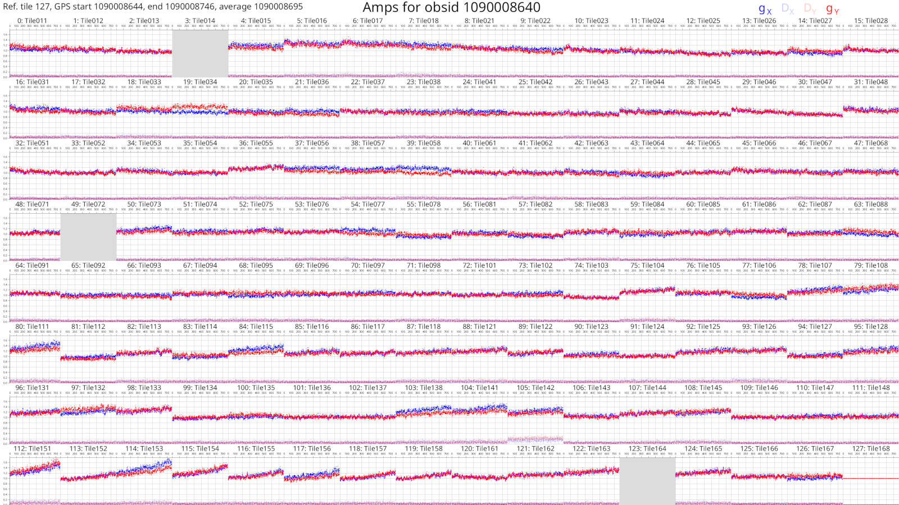
Phases
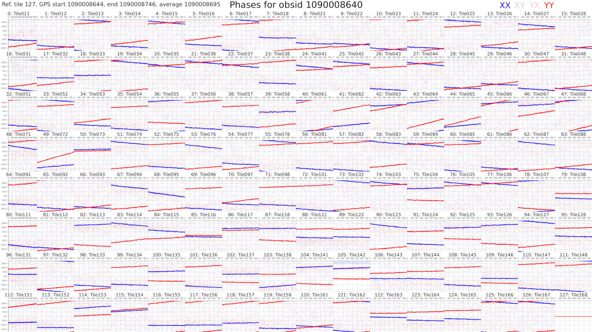
Plotting crosstalk scores
hyperdrive crosstalk-plot takes the per-baseline crosstalk scores that the
crosstalk-qa tool writes, one CSV per observation, and plots them over a whole
night so that persistent crosstalk stands out from noise. Each CSV needs pol,
ant1, ant2 (tile names), length_m, tau_peak_ns, t, z and flag
columns; other columns are ignored. A metafits supplies each tile's receiver and
cable flavour.
hyperdrive crosstalk-plot xt-out/*.csv -m 1472670968.metafits -o plots/
Crosstalk on the MWA is mostly between tiles on the same receiver, so by default
tiles are grouped by receiver, and sorted by cable flavour within each receiver
(--group-by receiver+flavour; receiver and flavour are also available).
Tiles are always coloured by cable flavour, with the colours assigned to the
flavours in name order so that a flavour keeps its colour between runs.
Five figures are written, each with an XX and a YY panel. Tiles with no scored baselines in any observation are left out. The examples below are from the 71 observations of the EoR1-high night of 2026-09-05 (1472670968 to 1472679368).
-
crosstalk_tile_obs.png: the number of flagged baselines touching each tile in each observation, in bins (0, 1, 2, 3-4, 5-8, 9-16, 17+), beside a strip of each tile's flavour. A tile that is a crosstalk source is a dark row through the night. Grey cells are observations in which the tile had no scored baselines.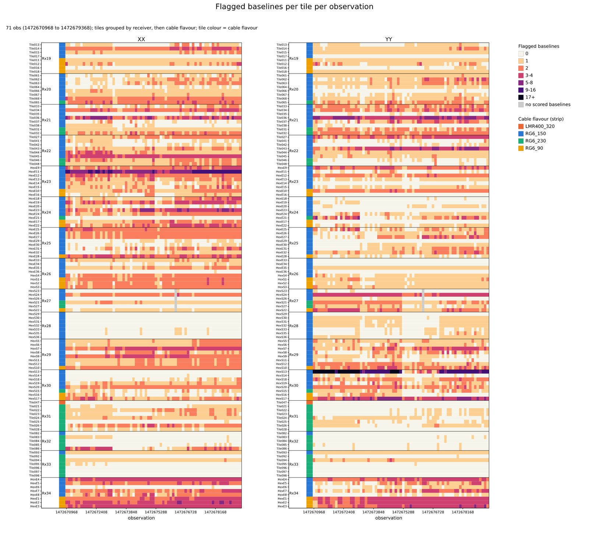
-
crosstalk_tile_spread.png: each tile's flag counts over the night (jittered, so that equal counts don't hide each other), with the median as a black bar; tiles with a median of 3 or more are labelled with it.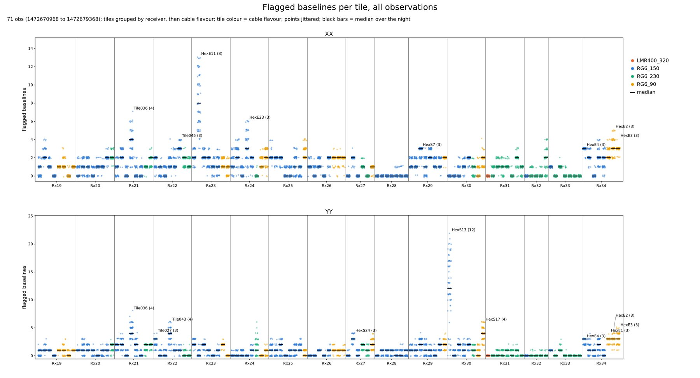
-
crosstalk_baseline_matrix.png: the night's median z of every baseline, XX below the diagonal and YY above. Each receiver's own block is outlined, so a hot cell outside a block is a pair on different receivers.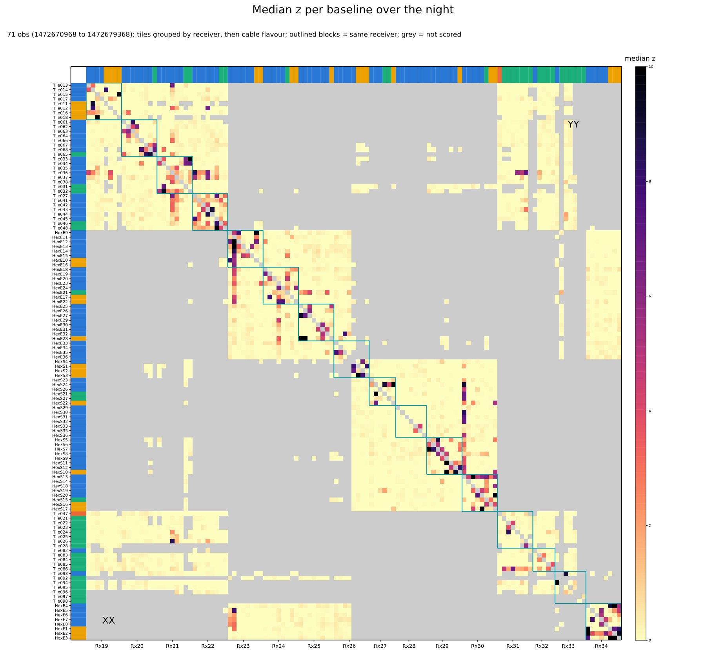
-
crosstalk_z_vs_length.png: z against baseline length for every baseline in every observation. Flagged points are coloured by their pair of flavours, circles for a pair of one flavour and triangles for mixed pairs. A persistent crosstalk baseline is a vertical stripe of flagged points; baselines flagged in at least half the observations are labelled. Rows with no delay peak (t = 0) are left out, as their z only reflects how little delay range was left to search.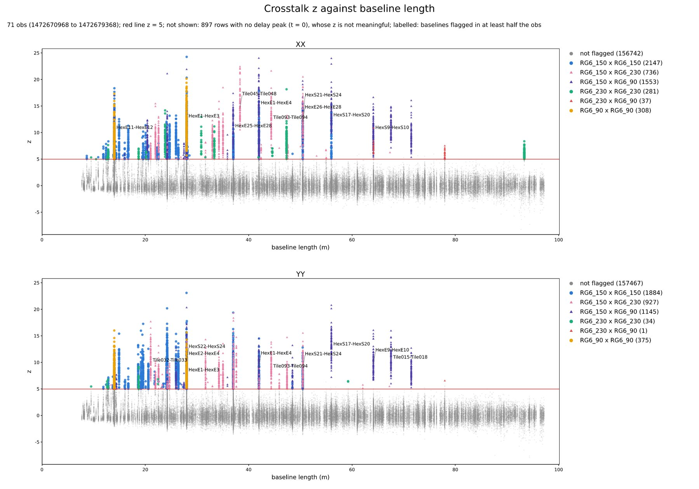
-
crosstalk_peak_delay.png: for the flagged baselines, z against the delay of the peak, and against how far the peak is past the foreground cut (\( |b|/c \) plus the search's buffer). Crosstalk through a fixed signal path keeps the same delay all night; a peak right at the cut may be foreground leakage instead.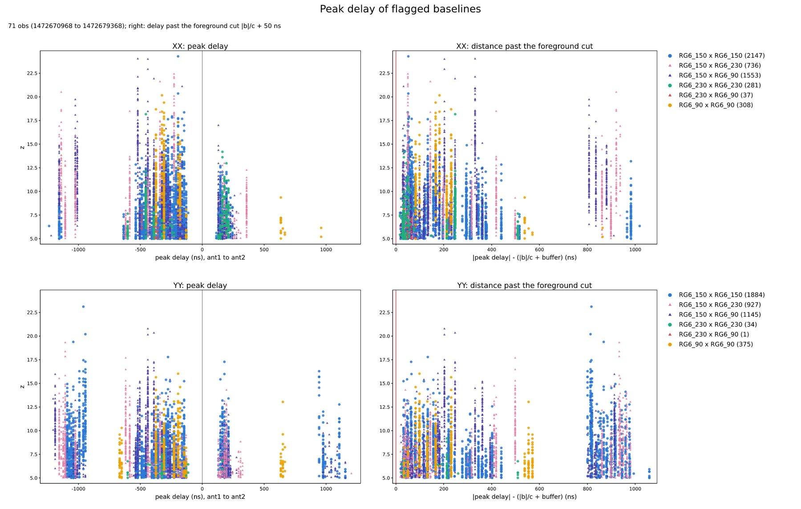
The z threshold and the foreground buffer are read from the JSON that
crosstalk-qa writes next to each CSV; the threshold can be overridden with
--z-min. The outlier tiles and
baselines are also printed.
Calibration solution QA
hyperdrive solutions-qa plots quality metrics of calibration solutions over
many observations, replacing mwa_qa's calqa and caljson plots. Like
crosstalk-plot, it uses a metafits for each tile's receiver and cable flavour,
groups tiles by receiver then flavour by default (--group-by), and colours
them by flavour. Solution tiles are matched to the metafits by name, or by
index if the solutions have no tile names. Only the first timeblock of each
file is used.
hyperdrive solutions-qa hyp_soln_*.fits -m 1377112304.metafits -o plots/
Each tile is compared with tiles of the same flavour, because tiles with the same signal path should have the same bandpass. The examples below are from six low-band (73.6-91.5 MHz) solutions from August 2023, 1377112304 to 1377807240; the per-observation figures are from 1377462584. The figures are:
-
solutions_qa_amp_<obsid>.png, one per observation: each tile's gain amplitude divided by the median of the same-flavour tiles in each chanblock, then by the tile's own median. The shared bandpass cancels, so a bad tile is a coloured row and a bad channel a coloured column.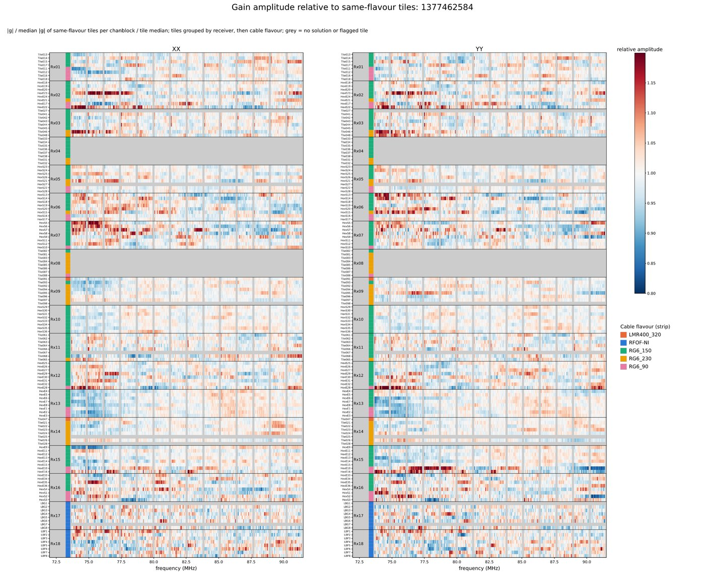
-
solutions_qa_delay_<obsid>.png, one per observation: the delay spectrum of each tile's gains, after dividing out degree-4 polynomial fits to their amplitude and phase, with a Blackman-Harris window. Chanblocks without a solution are left as gaps. Power at \( \pm\tau \) is averaged. The top panels show each flavour's median, with a triangle at the delay expected for a reflection off the far end of the cable, \( 2L / (v_f c) \), taking \( L \) from the flavour name and \( v_f = 0.85 \) for coax. Dotted lines mark multiples of 781.25 ns, where the coarse-channel structure of the gains appears.--max-delay-nssets the delay range (4000 ns by default).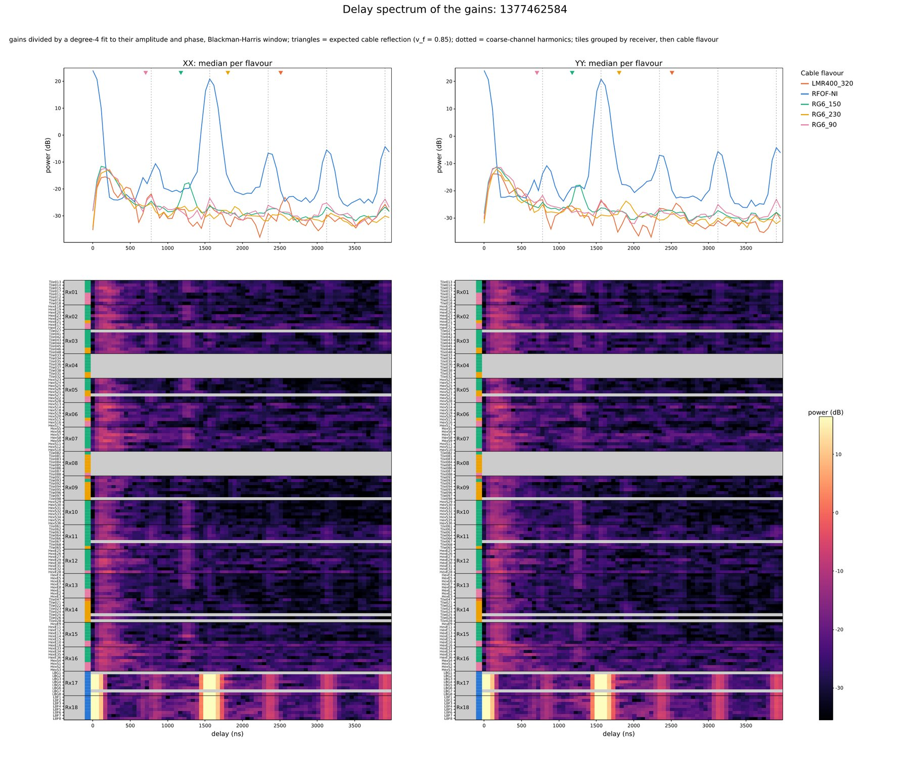
-
solutions_qa_amp_rms.png: the RMS over chanblocks of the normalised amplitude, as a modified z-score (\( 0.6745 (x - \mathrm{median}) / \mathrm{MAD} \)) within each flavour, one point per observation. Tiles past \( |z| = 3.5 \) are labelled with the number of observations they are outliers in, and those that are outliers in at least half the observations are printed.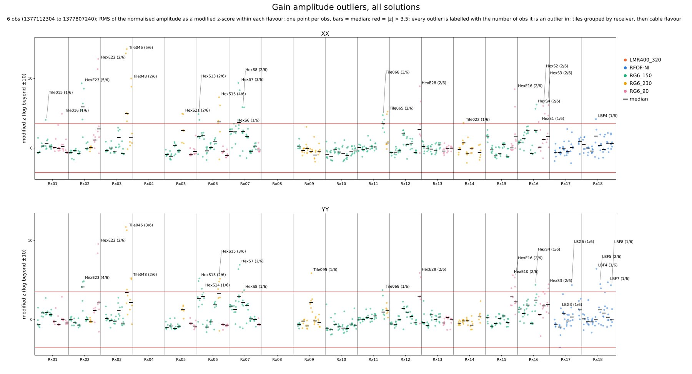
-
solutions_qa_convergence.png, if the solutions have aRESULTSHDU: the final precision of every chanblock of every observation, and its median and worst over the observations against the stop and minimum thresholds. Grey cells have no solution, and each observation's count of them follows its obsid.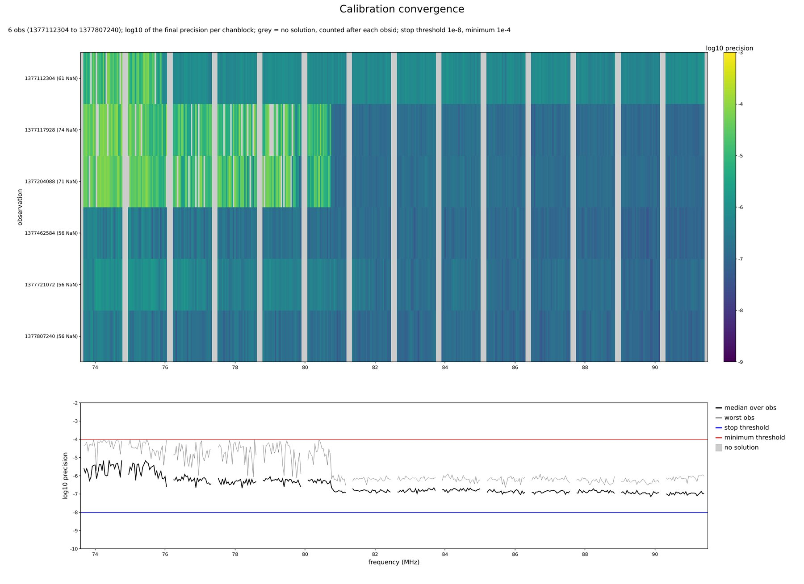